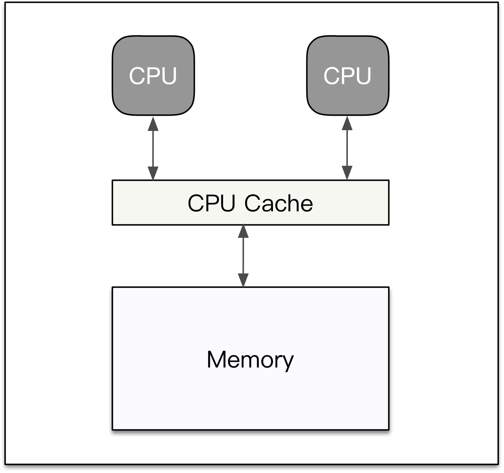
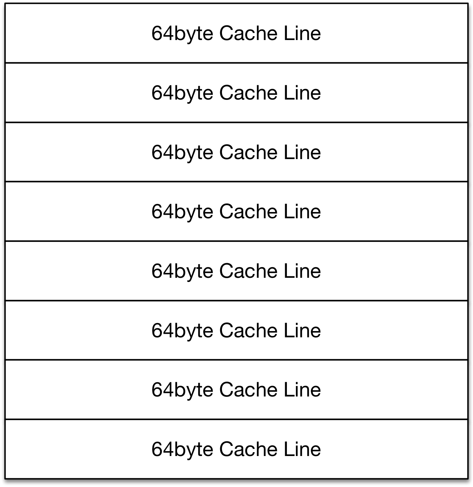

在Java原子操作-atomic中，我们有提到了缓存行，该篇是继续深挖其知识点-伪共享（False Sharing）。
先来看一个例子
1 2 3 4 5 6 7 8 9 10 11 12 13 14 15 16 17 18 19 20 21 22 23 24 25 26 27 28 29 30 31 32 33 34 35 36 37 38 39 40 41 42 43 44 45 46 47 48 49 50 51 52 53 54 55 56 57 58 59 60 61 62 63 64 65
| package com.pksure.jdk.cache.line.sharing; class SharingLong { //long v; volatile long v; //long p1, p2, p3, p4, p5, p6; // 此行代码称为：缓存行填充（Cache Line Padding） } class SharingThread extends Thread { SharingLong[] sls; int index; SharingThread(SharingLong[] sls, int index) { this.sls = sls; this.index = index; } @Override public void run() { for (int i = 0; i < 100000000; i++) { sls[index].v++; } } } public class Main { public static void main(String[] args) throws InterruptedException { System.out.println("core size: " + Runtime.getRuntime().availableProcessors()); for (int c = 0; c < 8; c++) { benchmark(); } } public static void benchmark() throws InterruptedException { int coreSize = Runtime.getRuntime().availableProcessors(); SharingLong[] sls = new SharingLong[coreSize]; for (int i = 0; i < coreSize; i++) { sls[i] = new SharingLong(); } SharingThread[] sharingThreads = new SharingThread[coreSize]; for (int j = 0; j < coreSize; j++) { sharingThreads[j] = new SharingThread(sls, j); } for (Thread thread : sharingThreads) { thread.start(); } long startTime = System.currentTimeMillis(); for (Thread t : sharingThreads) { t.join(); } long endTime = System.currentTimeMillis(); System.out.println("cost time: " + (endTime - startTime) + "ms"); } }
|
运行结果如下：【结果①】
1 2 3 4 5 6 7 8 9
| core size: 4 cost time: 5704ms cost time: 8090ms cost time: 6185ms cost time: 7542ms cost time: 6338ms cost time: 3725ms cost time: 7788ms cost time: 8150ms
|
将代码中（p1~p6变量）的行注释去掉后，再次执行，运行结果如下：【结果②】
1 2 3 4 5 6 7 8 9
| core size: 4 cost time: 3341ms cost time: 1441ms cost time: 1404ms cost time: 1454ms cost time: 1406ms cost time: 4076ms cost time: 3747ms cost time: 1484ms
|
如果再将volatile关键字和缓存行填充去掉后，v仅是普通的long型变量，运行结果如下：【结果③】
1 2 3 4 5 6 7 8 9
| core size: 4 cost time: 394ms cost time: 804ms cost time: 862ms cost time: 912ms cost time: 779ms cost time: 551ms cost time: 633ms cost time: 674ms
|
对于以上3种输出结果，接下去我们细细分享，而在之前先了解一下CPU缓存；
CPU缓存
现代的处理器一般都有3级缓存结构，L1、L2和L3，CPU直接访问主存是一个相对比较慢的操作，所以通过3级缓存来提升访存性能。
我们将3个缓存当成一个整体来看待，它就是CPU缓存。缓存的制造成本非常昂贵，它一般要比主存空间小的多。
CPU缓存示意图：

CPU在读主存的时候，会先将主存的一块数据加载到缓存上，然后在缓存上读取。当CPU写主存的时候，它会首先写缓存，
在未来的某个时间点再一次性将缓存的数据全部刷回主存，这样就可以提高写操作的性能。因为计算机程序数据操作的局部性，
CPU连续的指令倾向于访问相邻地址空间的数据，所以后续的读写操作有很大的概率可以直接在缓存上拿到数据。如果缓存上不存在，
那就再去主存上加载进来。
缓存虽然小，但是也不是太小，CPU在加载主存数据时，如果一次性将整个Cache填满，但是接下来的指令访问的数据又不在缓存上，
就会导致读浪费。另外如果只修改了其中几个字节的数据，但是得回写整个Cache到内存，这又会导致写浪费。
所以现代的CPU缓存一般是分行存储的，最小处理单位是一个行，这个行的长度一般来说是64字节，我们称之为【缓存行】。
缓存行示意图：

为什么【结果①】->【结果②】有如此性能上的差别？
我们先来计算SharingLong对象的内存大小：
运行【结果①】时：总共大小 = SharingLong自身对象大小 + v变量大小 = 64bit + 64bit = 128bit
运行【结果②】时：总共大小 = SharingLong自身对象大小 + v变量大小 + 6个p变量大小 = 64bit + 64bit + 6 * 64bit = 512bit
缓存行大小 = 64byte = 64 * 8bit = 512bit
当运行【结果①】时，经历了如下步骤：
第一步：从主存中拉取数据到缓存；
第二步：如果线程t1进行写数据时，因为是volatile变量，所以将值立即回写到主存，并将缓存行置为失效；
第三步：此时，如果t2,t3,t4进行写数据时，因为缓存行已失效，所以需要再次从主存中拉取数据到缓存行，然后再进行回写操作；
如此往返的进行一个线程更新了主内存，其他线程都需要重新拉取数据到缓存行，然后再次进行竞争写主存，造成了大量的写浪费，所以耗时较长。
当运行【结果②】时，从下图中可以看出解决了写竞争的问题：
为什么【结果③】的耗时又那么的少呢？
因为普通变量在进行写主存时，并不是立刻将缓存行置为失效，而是待一段时间后再设置为失效，并且读取时直接从缓存行中读取。如下图：
结论
- 使用volatile是需要付出性能代价的；
- 正确使用缓存行填充可以提高性能，不过也需要付出内存空间的代价。
FAQ
- 普通变量在进行回写主存时，是什么时间点将缓存行置为失效的呢？